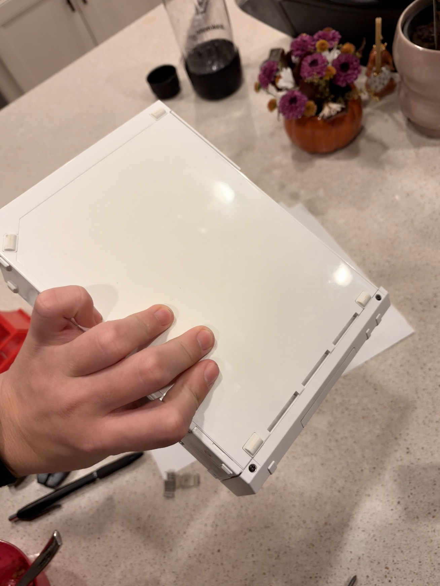
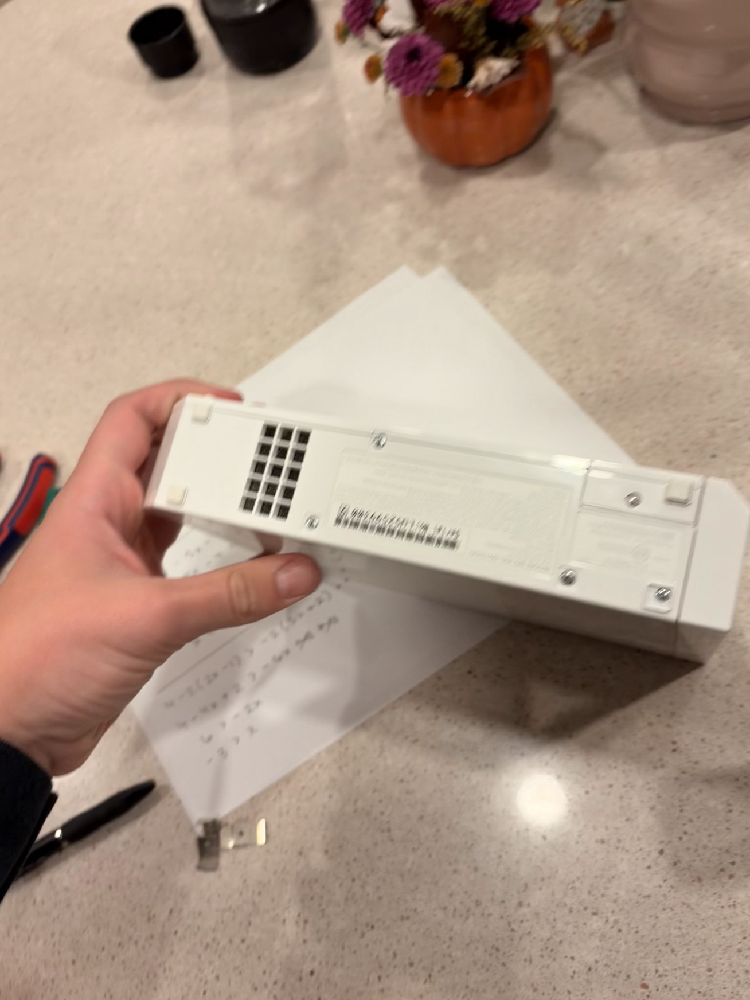
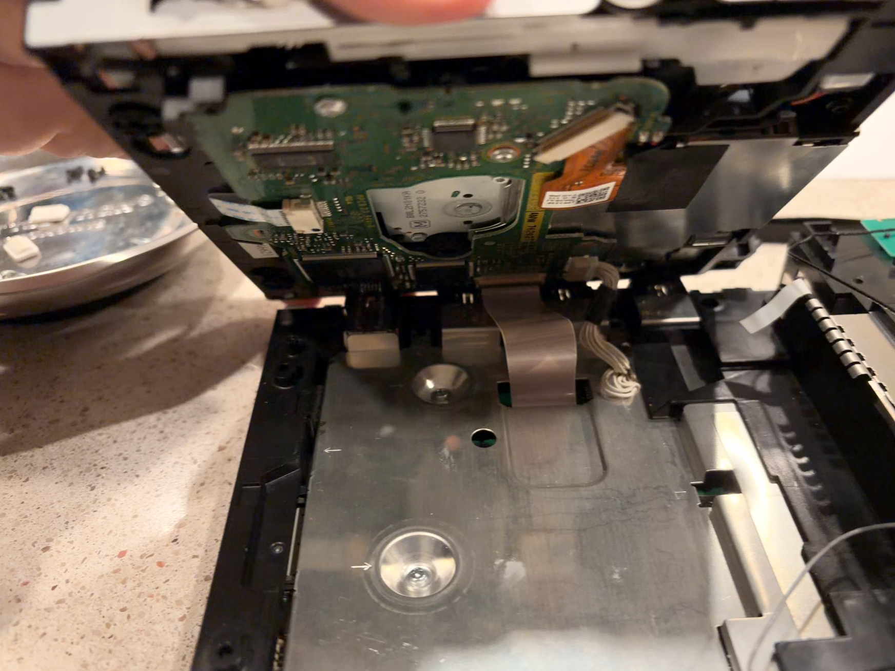
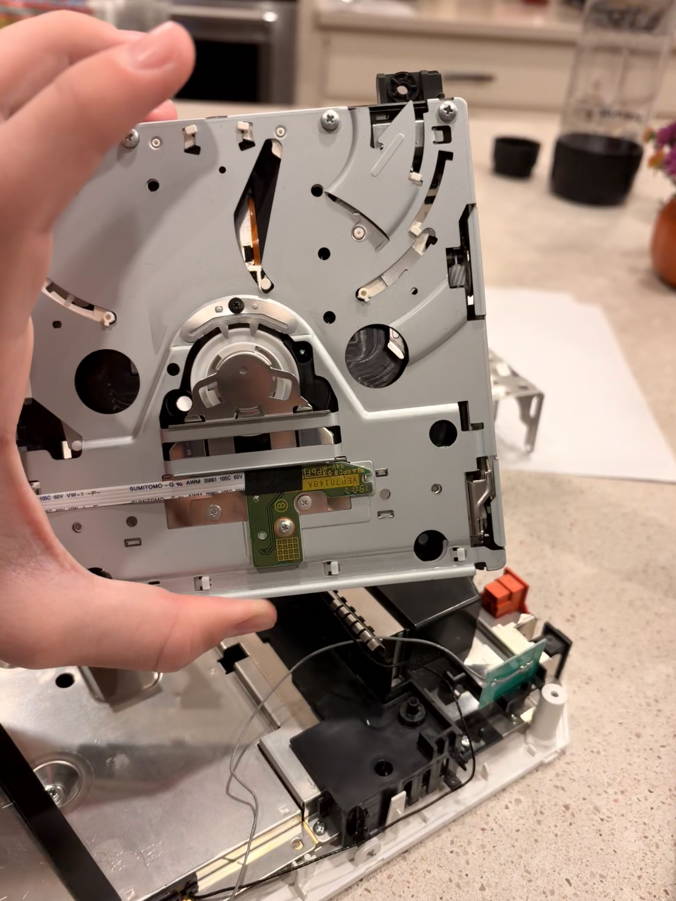

HARDWARE • 2026
Fixing old broken capacitors
I've had the Wii for a while but it hasn't worked recently because the screen was to dim on startup and would eventually get brighter and brighter so I googled the problem and it turned out that the people have had that same problem which led me to figure out that the 10V electrolydic capacitors were nt working correctly.




ABOUT THE PROJECT
Fixing the Wii
#######
THE PROCESS
How I Built It
Planning
I researched the components and figured out what hardware would work together.
Assembly
I assembled the components and connected everything together.
Testing
I tested the system and fixed the problems I encountered during setup.